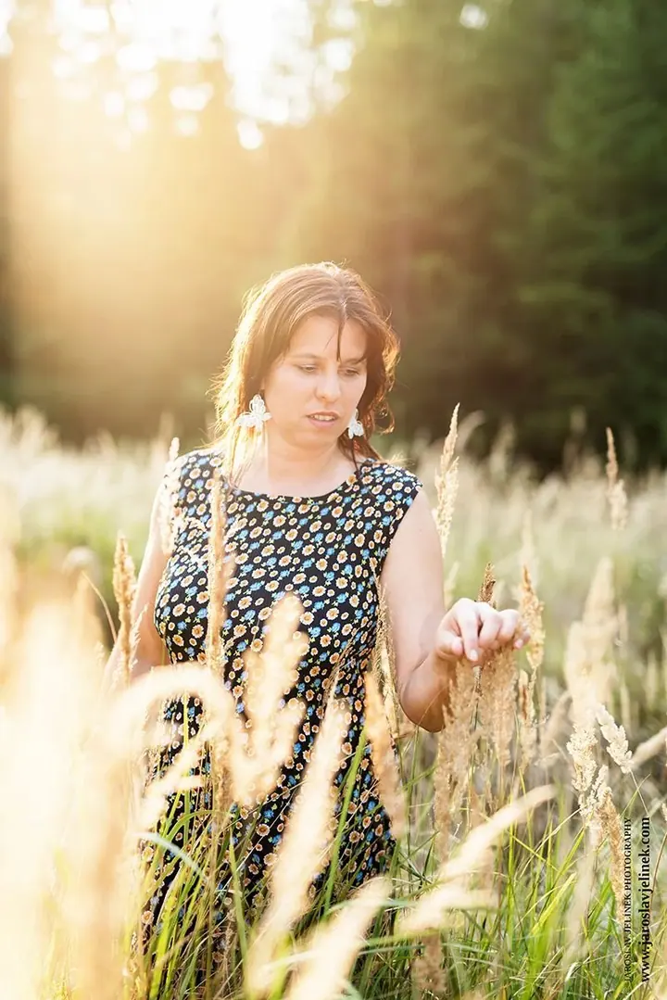
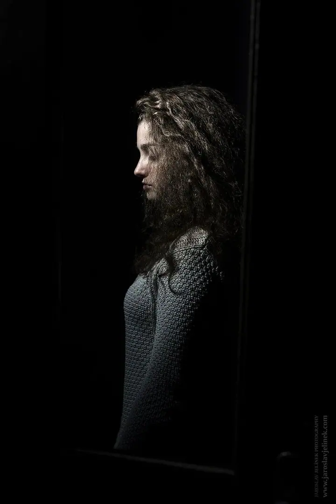
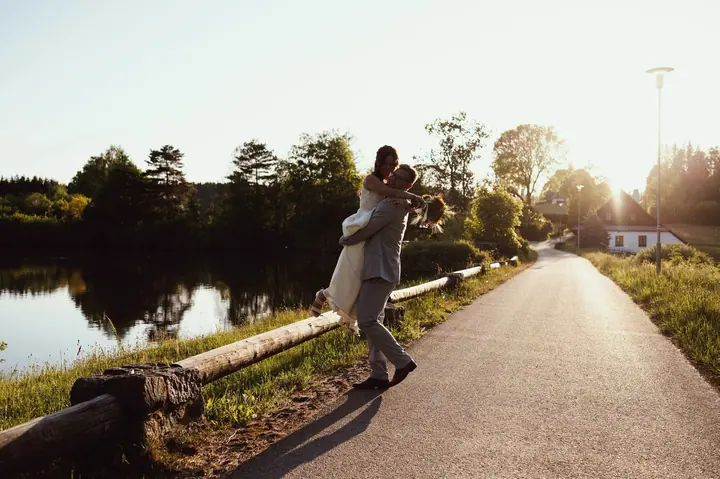
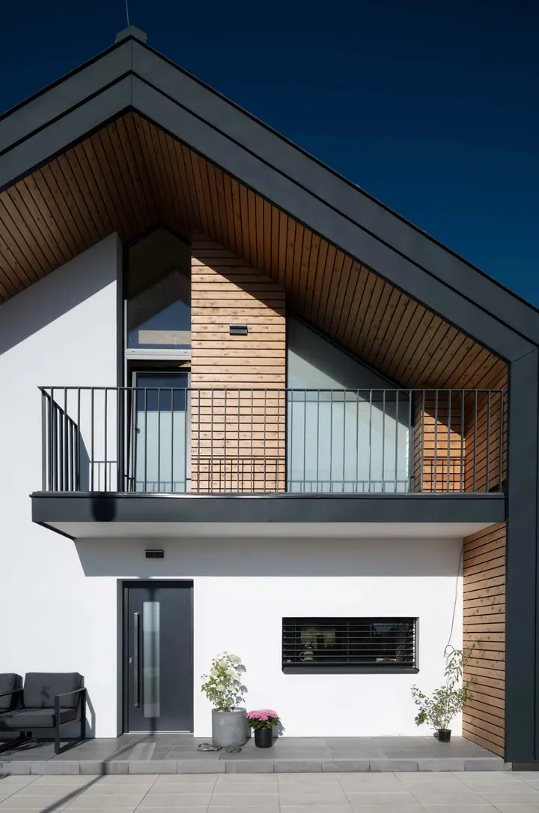
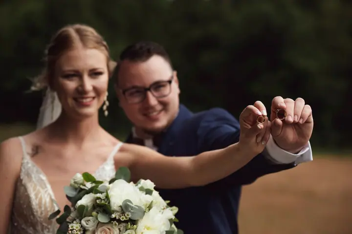

01 / 04
Svatební fotografie
Svatební den fotím jako celodenní reportáž, od ranních příprav po večerní zábavu, nebo jen od obřadu po první tanec. Před svatbou se potkáme a projdeme spolu celý váš den.
Zeptat se na termín→




Svatby a portréty v krásném světle
Zeptat se na termín →(01) Ahoj
Jmenuji se Jarda Jelínek a fotím svatby , přirozené portréty i domy a interiéry , hlavně na Vysočině. Ke každému přistupuji individuálně a snažím se naplnit vaše přání a představy.
(02) Co fotím
01 / 04
Svatební den fotím jako celodenní reportáž, od ranních příprav po večerní zábavu, nebo jen od obřadu po první tanec. Před svatbou se potkáme a projdeme spolu celý váš den.
Zeptat se na termín→02 / 04
Přirozené portréty, krásné světlo a pohoda při focení. Chci, aby vás to bavilo a z nových fotek jste měli radost.
Zeptat se na termín→03 / 04
Fotím domy, interiéry a wellness prostory pro realitní inzerci i reklamu. Čisté světlo a prostor, který působí přesně tak, jak vypadá.
Zeptat se na termín→Dále nabízím
Společně zachytíme krásný čas očekávání i chvíle, kdy je celá rodina pohromadě. Takové chvíle bývají vzácné a na fotkách vám zůstanou napořád.
↗(04) Postup
Od první zprávy po hotovou galerii.
Krok 1 z 4
Napište mi termín a místo svatby. Ceník mám veřejný a balíček klidně upravíme na míru podle vašich představ.
Krok 2 z 4
Přijedu za vámi nebo se potkáme na místě obřadu. Projdeme celý svatební den a řeknete mi, na čem vám záleží.
Krok 3 z 4
Místa focení si předem projdu a hlídám si počasí, načasování i světlo. Jsem v pozadí, ale všude, kde se něco děje.
Krok 4 z 4
Fotografie dostanete na USB v dárkovém balení a ve webové galerii. Na přání připravím i fotoknihu.
Prožijte svůj den bez starostí, já to zvládnu.
(05) Za objektivem
Svatbu fotím jako celodenní reportáž. Zajímají mě emoce a krásné chvíle mezi vašimi nejbližšími, ne jen pár naaranžovaných portrétů. Zatím mám za sebou přes 70 svatebních příběhů a každé svatbě se věnuji naplno.
Před svatbou se vždycky uvidíme. Přijedu za vámi nebo se potkáme na místě obřadu, projdeme celý den a prohlédnu si okolí, abych věděl, kde a kdy bude nejlepší světlo. Řekněte mi, co máte rádi: černobílé fotky, fotku s pejskem, nebo hlavně kamarády a rodinu a portrétů jen pár. Vy si pak můžete svůj den užít bez starostí.
Kromě svateb fotím portréty, těhotenské a rodinné focení a také domy a interiéry. Působím hlavně na Vysočině a ve východních Čechách, ale dojedu kamkoliv po republice. Ceník mám veřejný, takže konečnou cenu znáte předem.
Jaroslav
Jaroslav Jelínek · Svatební fotograf a portrétista
Balíček Půlden (až 5 hodin, zhruba 350 fotek) stojí 13 500 Kč, Exclusive (až 12 hodin, zhruba 600 fotek, fotokniha v ceně) 21 000 Kč. Balíčky jsou orientační, rozsah vždy upravíme podle vašich přání.
Ano. Fotím hlavně na Vysočině a ve východních Čechách, ale dojedu kamkoliv po republice. Doprava nad 200 km je za 6 Kč/km.
Na USB v dárkovém balení a k tomu ve webové galerii na 90 dnů. Data archivuji 5 let, takže o fotky nepřijdete.
Na svatby od listopadu do dubna dávám slevu 5 %. Pro rezervaci termínu stačí záloha 3 000 Kč.
(07) Kontakt
Napište pár vět o tom, co si představujete, a termín, který se vám hodí.